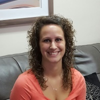
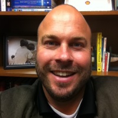
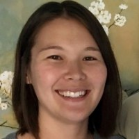

About Us
Nicole Woods, Director
Nicole's educational background includes graduating with honors from both Towson University where she received her BS and the University of Maryland where she obtained her MSW.
She has been practicing since 2002 and has clinical experience working in a variety of settings including inpatient hospitals, rehabilitation facilities, The MD Board of Childcare, outpatient mental health clinics, and in private mental health practice.
Nicole is a Licensed Clinical Social Worker (LCSW-C) who works with children over the age of 10 years old, adults, and families. She believes in the ability to create change in one's life in the context of a therapeutic relationship in an environment of safety and trust which she is committed to providing.
Nicole is an active member of the NASW, AED, IAEDP, NAPW and is highly committed to her professional development. As a result, she participates regularly in Continuing Education courses and trainings at both the local and national level. Nicole is recognized as a Give an Hour program clinician for military personnel and their families. She possesses a specialization in cognitive behavioral therapy and eating disorders. Nicole is also a Certified Eating Disorder Specialist (CEDS), as well as a Certified Clinical Supervisor who provides supervision for other clinicians seeking advanced clinical licensure.
In her spare time, she enjoys reading, crafting, volleyball, coaching Girls on the Run and spending time with family.
Nicole Benner, Registered Dietitian
Nicole is a Registered Dietitian who is passionate about helping her clients find peace with food in order to meet their nutrition and wellness goals. She provides medical nutrition therapy based on individual needs and incorporates intuitive eating, a non-diet approach. Her nutrition philosophy promotes "all foods fit". She encourages clients to eat real, whole food as a source of nourishment as well as a source of enjoyment and break free from the diet cycle.
Nicole completed her Bachelors of Science Degree in Nutrition and Dietetics from Penn State University in 1996 and subsequently completed her Dietetic Internship with Aramark in the Greater Philadelphia area in 1997.
Nicole has over 10 years of Nutrition Counseling experience partnering with clients in hospitals, outpatient nutrition counseling and community nutrition settings. Currently, she holds a position at Messiah College where she counsels students who struggle with eating disorders.
Nicole is committed to building a safe environment in which her clients can explore their relationship with food without judgment or criticism. In addition, she strives to stay current on research and treatment modalities through continuing education and trainings. It is her desire to continue specialization in the treatment of eating disorders. She is a member of the Academy of Nutrition and Dietetics and the International Association of Eating Disorder Professionals (IAEDP).
Chad Briggs, Clinician
Chad Briggs is a first generation college graduate from a small agricultural community in the heart of central Pennsylvania. He completed Bachelors of Science degree in Psychology at Penn State University in 2006. He attended graduate school at Shippensburg and completed his Masters of Social work in 2017. Chad became a Licensed Social Worker in February of 2019. He has a large background of work experience in the areas of child welfare and inpatient mental health treatment. Chad is an advocate for mental health and wellness and reducing the stigma of receiving mental health treatment.
Chad has a strong focus on helping children and families to identify therapeutic needs and working collaboratively on finding solutions through the use of CBT, mindfulness, and Narrative based approaches. He also has a strong interest in the area of trauma, it's subjectivity, and it's effects on development and perception.
Chad spends his free time at home attempting to be an amateur landscaper, hiking, watching movies, or enjoying live music. He's also a wanna be foodie so he's always looking for unique and creative cuisine. Chad also has a passion for the performing arts and has done live theater for many years including several dinner theater shows. He is a self professed game show lover and enjoys watching and participating in trivia shows. Chad has tried out for both Teen Jeopardy and Who Wants to Be A Millionaire. Sadly he didn't make it past the initial round but that hasn't stopped him from continuing to try.
Megan Chicchi, Clinician
Megan Chicchi is an LSW who graduated with honors from Millersville University with a Bachelor of Arts undergraduate degree and MSW for her graduate degree. She has worked with children in school settings helping to navigate the challenges of social groups and learning styles, college students with diverse backgrounds including multi-cultural and LGBTQ+ students, and counseling non-traditional college students facing economic hardships. Megan also has experience working with children and adolescents as they navigate the adoption process.
Megan utilizes a person-centered approach when working with individuals, and has an interest in working with children and adolescents to reach their goals by using a strength-based perspective.
She has a passion for social justice and continues to pursue training in topics relating to diversity, equity, and inclusion. In her free time, Megan enjoys reading, hiking, yoga, painting and spending time with family.
Megan Cline, Clinician
Megan graduated with honors from York College of Pennsylvania, where she obtained her Bachelor's Degree, and Temple University's Master of Social Work program. She has been practicing in the field since 2012, and in previous years, has volunteered her time and services to multiple organizations, including Access York, Family-Child Resources, and the Children's Resource Center in Harrisburg. She also has clinical experience working in partial hospitalization programs, outpatient mental health facilities, mental health private practice, and higher education.
Megan is familiar and comfortable working with a variety of issues, including but not limited to, Eating Disorders, LGBTQIAA-related issues, anxiety, grief and loss, self-harm/suicidality, emotional disturbances, relationship/family concerns, depression, and other mental health disorders. With a non-judgmental approach, she empowers clients to make positive and healthy choices when met with difficult life situations.
Megan obtained her social work license from the Pennsylvania State Board of Social Workers, Marriage and Family Therapists to continue practicing in the field of counseling and social work. She also furthers her professional development and meets licensure requirements by regularly participating in trainings and Continuing Education courses at local and national levels. As a social worker and member of the National Association of Social Workers (NASW), she ensures that she practices within typical social work guidelines and properly abides by the Code of Ethics.
James Corbin, Clinician
James R. Corbin is an LCSW with over 20 years of experience working in Pennsylvania. James received his Masters Degree in Social Work from Temple University and earned his Bachelor of Arts Degree in Political Science from the Pennsylvania State University.
James completed post-graduate work in clinical social work at the Clinical Social Work Institute in Washington DC including advanced psychodynamic training and supervision. He also possesses a specialty in treating childhood mental illness and has received training in child centered play therapy. He works with both adults and children and specializes in providing individual and family therapy with children, adolescents, adults, and their families. He also works extensively with adults experiencing life transitions, parenting challenges, relationship strain, and loss including military service members and their families. James is currently a part-time adjunct professor at Sacred Heart University in their Masters in Social Work program teaching in their advanced practice courses as well as their advanced research course. He had previously served as a full-time clinical faculty and instructor in the Graduate School of Social Work at Temple University and was formerly Assistant MSW Program Director.
Mr. Corbin has written and presented extensively on the subject of neuroscience, trauma, and attachment and the impact on clinical practice. He is a volunteer therapist for Give an Hour and was an active member of PA Cares and the Harrisburg Regional Planning Team for Operation Military Kids.
Katie Green, Clinician
Kathleen (Katie) Green graduated from Shippensburg University in 2010 with her Bachelor of Science in Psychology. In 2018 she obtained her Masters graduate degree in Social Work and became a licensed social worker in February of 2019.
Katie has clinical experience treating individuals, couples, families, and groups in multiple behavioral health care settings over the past 10 years. She has had experience in such settings as an inpatient psychiatric hospital, home care settings, and in the school setting. Her experience in the inpatient psychiatric hospital has helped her develop an understanding and sensitivity to the needs of vulnerable populations and is trained in cultural competency awareness. She is sensitive of and affirming of individuals experiencing (LGBTQ+) gender identity issues. Katie takes a holistic approach, viewing the client as the center of treatment and recognizes that each individual’s journey is different and unique. Katie has received formal training and has experience in various therapy processes such as Dialectical Behavioral Therapy, Cognitive Behavioral Therapy, Interpersonal Therapy, and Family Therapies. She is able to take a creative approach that endeavors to foster rapport, trust, empathy, and respect within the therapeutic relationship.
In her spare time, Katie enjoys traveling to different states and exploring national parks with her family. She enjoys spending time with her dog, taking him for walks, and photography. When she isn’t outside enjoying the fresh air, she can be found watching movies or attending live concerts.
Denise Haas, Clinician
Denise Haas is a Licensed Clinical Social Worker who received her Masters in Social Work from University of Maryland, Baltimore with a focus in children and families. She received her Bachelor of Arts degree from University of Maryland, majoring in criminal justice.
She has been practicing since 2014 and has clinical experience working with children in schools, their homes, and with children in foster care. She believes in the ability to help children navigate through life in a way that other people can understand them. She does this by helping children use their own strength, learning new coping skills, and learning how to believe in themselves.
Denise Haas has worked with children and families for many years in a number of settings, including, a family homeless shelter, behavioral health, schools, foster care and adoption. She brings not only a passion for helping children and families, but is committed to making life a little more manageable for families.
Denise has an interest in trauma, attachment, foster care and adoption issues, anxiety, and ADHD. She enjoys helping families learn to communicate and helping each other grow in a positive way.
In her spare time, she enjoys photography, being outside and spending time with family.

Rachel Mailey, Clinician
Rachel Mailey graduated with her Master of Science (MS) in Counseling from Shippensburg University in 1998. She became a Licensed Professional Counselor in 2002, and has worked in a variety of Mental Health settings over the past several years including small group counseling practices, Community Mental Health agencies, and family and children's services. She has worked as a bereavement counselor at a local Hospice and in the schools as a school-based counselor as well.
Rachel has a strong interest in working with postpartum women, particularly those suffering with Postpartum Depression, as well as a general interest in Grief and Loss work, including perinatal loss. Rachel works with all age groups and most issues such as anxiety, depression, life transitions, and marital issues. She provides Individual and Couples Counseling, and believes in parental involvement in the therapeutic process when working with children. Rachel believes in the power that each person has to make positive changes for themselves in their lives, and recognizes that sometimes seeking professional guidance and support in an objective and non- judgmental setting is necessary to promote growth. She recognizes that allowing oneself to be vulnerable in a counseling setting is not an easy process but that the rewards can be tremendous.
Rachel's pride and joy (and toughest job on the planet!) is raising her five children, with the help of her husband. She is an active member of her local public school board and can be found volunteering in the schools for a variety of activities. She loves to garden and read, and is found most evenings running to, and attending, her children's sports, music and theater events.
Chelsea Ranney, Clinician
Chelsea is a Licensed Social Worker who received her BS in Communications and Master's of Social Work from Millersville University.
Chelsea has been in the Human Services field for approximately ten years. She has experience in a variety of fields, including but not limited to: Mental Health, Drug and Alcohol, Trauma, Eating Disorders, Marriage Counseling, Inmate and Re-entry Services, Gender Identity, LGBTQIA+, and grief and loss. Chelsea works with children and adults over the age of 12 and uses a plethora of theories and practices to help motivate and empower the client.
Chelsea spends her free time with her new husband and their furry friend Frankie: hiking, walking and being outdoors. She also enjoys theatre, hockey and interior design.
Selene Scavitto, Clinician
Selene graduated from Shippensburg University with her MSW and currently is a LSW. Selene has experience working in a variety of settings including as Director of Social Services at a Continuing Care Retirement Community, hospital setting, and outpatient private practice. She enjoys working with adolescents and adults, helping them find their way through life's challenges, by teaching new ways to cope and setting realistic goals. She strives to offer a non-judgmental, culturally sensitive environment conducive to exploration and growth.
In her spare time, Selene enjoys spending time with her family and is active in raising awareness of the mental health needs of military members and veterans. Selene coordinates a yearly Ruck March which supports efforts in the fight against suicide. The March raises funds for non-profit organizations that serve veterans and to raises awareness regarding the prevalence of veteran suicide and mental health issues.
Angie Smyser, Clinician
Angie Smyser is an LSW who received her MSW degree from Temple University in 2004. She is a member of the National Association of Social Workers.
Angie has experience in a variety of health care settings including nursing homes, home health care, and Hospice care. She has counseled individuals and family members in navigating an often-complex health care system. Her background has allowed her to lead support groups and work with those dealing with grief and loss issues. She also has experience with children and families, working as a mobile therapist and a family-based clinician.
Angie has an interest in providing services to individuals and families of all age ranges. She is comfortable treating the following (but not limited to): anxiety, depression, self-esteem issues, grief and loss, PTSD, life transitions, and family difficulties, and women’s issues. She provides a holistic and non-judgmental approach, understanding that each person is on their own unique journey.
In her spare time, Angie enjoys spending time with her husband and cats. She is a scrapbooker and attends scrapbooking events with her mother throughout the year. She and her husband also like to attend the Carlisle car show several times per year.